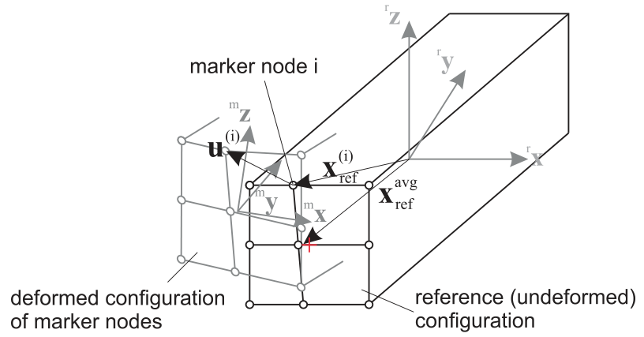

MarkerSuperElementRigid
A position and orientation (rigid-body) marker attached to a SuperElement, such as ObjectFFRF, ObjectGenericODE2 and ObjectFFRFreducedOrder (for which it may be inefficient). The marker acts on the mesh nodes, not on the underlying nodes of the object. Note that in contrast to the MarkerSuperElementPosition, this marker needs a set of interface nodes which are not aligned at one line, such that these node points can represent a rigid body motion. Note that definitions of marker positions are slightly different from MarkerSuperElementPosition.
Interface
Provides:
Position,OrientationBodies it can be placed on: ObjectGenericODE2, ObjectFFRF, ObjectFFRFreducedOrder
Connectors, constraints and loads that can use it: ObjectConnectorSpringDamper, ObjectConnectorCartesianSpringDamper, ObjectConnectorRigidBodySpringDamper, ObjectConnectorLinearSpringDamper, ObjectConnectorTorsionalSpringDamper, ObjectConnectorGravity, ObjectConnectorHydraulicActuatorSimple, ObjectConnectorDistance, ObjectConnectorRollingDiscPenalty, ObjectContactConvexRoll, ObjectContactSphereSphere, ObjectContactSphereTorus, ObjectContactSphereTriangle, ObjectContactCurveCircles, ObjectJointGeneric, ObjectJointRevoluteZ, ObjectJointPrismaticX, ObjectJointSpherical, ObjectJointRollingDisc, ObjectJointRevolute2D, ObjectJointPrismatic2D, LoadForceVector, LoadTorqueVector
Parameters
The parameters of the item; in a dictionary, its type is ‘SuperElementRigid’:
name |
type |
size |
default |
description |
|---|---|---|---|---|
name |
String |
‘’ |
marker’s unique name |
|
bodyNumber |
ObjectIndex |
invalid (-1) |
(symbol: \(n_b\)) body number to which marker is attached to |
|
offset |
Vector3D |
3 |
None (zero) |
(symbol: \(\LU{r}{\ov_{ref}}\)) local marker SuperElement reference position offset used to correct the center point of the marker, which is computed from the weighted average of reference node positions (which may have some offset to the desired joint position). Note that this offset shall be small and larger offsets can cause instability in simulation models (better to have symmetric meshes at joints). The translation of localHT. |
localHT |
HomogeneousTransformation |
None (identity) |
(symbol: \(\LU{r}{\Hm}_{m}\)) the frame of the marker against the frame the marker computes from the mesh nodes, as homogeneous transformation: its translation is offset, its rotation turns the marker frame; a 4x4 matrix, its 16 values row by row or an exu.HT; None: not given; given together with offset, both must agree |
|
meshNodeNumbers |
ArrayIndex |
[] |
(symbol: \([k_0,\,\ldots,\,k_{n_m-1}]\tp\)) a list of \(n_m\) mesh node numbers of superelement (=interface nodes) which are used to compute the body-fixed marker position and orientation; the related nodes must provide 3D position information, such as NodePoint, NodePoint2D, NodeRigidBody[..]; in order to retrieve the global node number, the generic body needs to convert local into global node numbers |
|
weightingFactors |
Vector |
[] |
(symbol: \([w_{0},\,\ldots,\,w_{n_m-1}]\tp\)) a list of \(n_m\) weighting factors per node to compute the final local position and orientation; these factors could be based on surface integrals of the constrained mesh faces |
|
useAlternativeApproach |
Bool |
True |
this flag switches between two versions for the computation of the rotation and angular velocity of the marker; alternative approach uses skew symmetric matrix of reference position; follows the inertia concept |
|
rotationsExponentialMap |
Index |
2 |
Experimental flag (2 is the correct value and will be used in future, removing this flag): This value switches different behavior for computation of rotations and angular velocities: 0 uses linearized rotations and angular velocities, 1 uses the exponential map for rotations but linear angular velocities, 2 uses the exponential map for rotations and the according tangent map for angular velocities |
|
visualization |
VMarkerSuperElementRigid |
parameters for visualization of item |
Visualization parameters
The parameters of VMarkerSuperElementRigid, given as visualization:
name |
type |
size |
default |
description |
|---|---|---|---|---|
show |
Bool |
True |
set true, if item is shown in visualization and false if it is not shown |
|
showMarkerNodes |
Bool |
True |
set true, if all nodes are shown (similar to marker, but with less intensity) |
Drawing
Drawn as all markers; at the weighted position of its mesh nodes, deformed with bodies.deformationScaleFactor, with its frame.
Settings beyond those of all markers: bodies.deformationScaleFactor.
Detailed description
Definition of marker quantities:
intermediate variables |
symbol |
description |
|---|---|---|
number of mesh nodes |
\(n_m\) |
size of |
mesh node number |
\(i = k_i\) |
abbreviation, runs over all marker mesh nodes |
mesh node local displacement |
\(\LU{r}{\uv^{(i)}}\) |
current local (within reference frame \(r\)) displacement of mesh node \(k_i\) in object \(n_b\) |
mesh node local position |
\(\LU{r}{\pv^{(i)}} = \LU{r}{\xv^{(i)}\cRef} + \LU{r}{\uv^{(i)}}\) |
current local (within reference frame \(r\), which is the body frame \(b\) ,e.g., in |
mesh node local reference position |
\(\LU{r}{\xv^{(i)}\cRef}\) |
local (within reference frame \(r\)) reference position of mesh node \(k_i\) in object \(n_b\), see e.g. |
averaged local reference position |
\(\LU{r}{\xv^\mathrm{avg}\cRef} = \sum_i w_i \LU{r}{\xv^{(i)}\cRef}\) |
midpoint reference position of marker; averaged local reference positions of all mesh nodes \(k_i\), using weighting for averaging; may not coincide with center point of your idealized joint surface (e.g., midpoint of cylinder), see Fig. 46 |
marker centered mesh node local reference position |
\(\LU{r}{\pv^{(i)}\cRef} = \LU{r}{\xv^{(i)}\cRef}- \LU{r}{\xv^\mathrm{avg}\cRef}\) |
local reference position of mesh node \(k_i\) relative to the center position of marker |
mesh node local velocity |
\(\LU{r}{\vv^{(i)}}\) |
current local (within reference frame \(r\)) velocity of mesh node \(k_i\) in object \(n_b\) |
super element reference point |
\(\LU{0}{\pv}_r\) (\(=\LU{0}{\pv}\indt\) in |
current position (origin) of super element’s floating frame (r), which is zero, if the object does not provide a reference frame (such as GenericODE2) |
super element rotation matrix |
\(\LU{0r}{\Rot}\) |
current rigid body transformation matrix of super element’s floating frame (r), which is the identity matrix, if the object does not provide a reference frame (such as GenericODE2) |
super element angular velocity |
\(\LU{r}{\tomega_r}\) |
current local angular velocity of super element’s floating frame (r), which is zero, if the object does not provide a reference frame (such as GenericODE2) |
marker position |
\(\LU{0}{\pv}_{m} \!=\! \LU{0}{\pv}_r + \LU{0r}{\Rot} \left(\LU{r}{\ov\cRef}\! +\! \sum_i w_i \cdot \LU{r}{\pv^{(i)}} \right)\) |
current global position which is provided by marker; note offset \(\LU{r}{\ov\cRef}\) added, if used as a correction of marker mesh nodes |
marker velocity |
\(\LU{0}{\vv}_{m} = \LU{0}{\dot \pv}_r \) \(+ \LU{0r}{\Rot} \left( \LU{r}{\tilde \tomega_r} \left(\LU{r}{\ov\cRef}\! +\! \sum_i w_i \cdot \LU{r}{\pv^{(i)}} \right) + \right.\) \(\left. \sum_i (w_i \cdot \LU{r}{\dot \uv^{(i)}}) \right)\) |
current global velocity which is provided by marker |
marker rotation matrix |
\(\LU{0r}{\Rot}_{m} = \LU{0r}{\Rot} \cdot \mathbf{exp}(\LU{r}{\ttheta}_{m}) \LU{rm}{\Rot}\) |
current rotation matrix, which transforms the local marker coordinates and adds the rigid body transformation of floating frames \(\LU{0r}{\Rot}\); uses exponential map for SO3, assumes that \(\ttheta\) represents a rotation vector; \(\LU{rm}{\Rot}\) is the rotation of |
marker local rotation |
\(\LU{r}{\ttheta}_{m}\) |
current local linearized rotations (rotation vector); for the computation, see below for the standard and alternative approach |
marker local angular velocity |
\(\LU{r}{\tomega}_{m}\) |
local angular velocity due to mesh node velocity only; for the computation, see below for the standard and alternative approach |
marker global angular velocity |
\(\LU{0}{\tomega}_{m} = \LU{0}{\tomega_{r}} + \LU{0r}{\Rot} \LU{r}{\tomega}_{m}\) |
current global angular velocity |
The rotation matrix and the angular velocity depend on rotationsExponentialMap: with 0,
\(\LU{0r}{\Rot}_{m} = \LU{0r}{\Rot} (\Im + \LU{r}{\tilde \ttheta}_{m})\), linearized; with 1 and 2 the
exponential map of the table; with 2 (the default) the local angular velocity is also transformed by the
tangent operator of the exponential map, \(\mathbf{T}_{\exp}(\LU{r}{\ttheta}_{m}) \LU{r}{\tomega}_{m}\).
Marker background
The marker allows to realize a multi-point constraint (assuming that the marker is used in a joint constraint),
connecting to averaged nodal displacements and rotations (also known as RBE3 in NASTRAN), see e.g. HeirmanDesmet2010.
However, using Craig-Bampton RBE2 modes, will create RBE2 multi-point constraints for ObjectFFRFreducedOrder objects.
For more information on the various quantities and their coordinate systems, see table above and Fig. 46.


Fig. 46 Sketch of marker nodes, exemplary node \(i\), reference coordinates and marker coordinate system; note the difference of the center of the marker ‘surface’ (rectangle) marked with the red cross, and the averaged of the averaged local reference position.
Marker quantities
The marker provides a ‘position’ jacobian, which is the derivative of the global marker velocity w.r.t. the object velocity coordinates \(\dot \qv_{n_b}\),
In case of ObjectGenericODE2, assuming pure displacement based nodes,
the jacobian will consist of zeros and unit matrices \(\Im\) ,
in which the \(\Im\) matrices are placed at the according indices of marker nodes.
In case of ObjectFFRFreducedOrder, this jacobian is computed as weighted sum
of the position jacobians, see ObjectFFRFreducedOrder,
In ObjectFFRFreducedOrder, the jacobian usually affects all reduced coordinates.
Standard approach for computation of rotation (useAlternativeApproach = False)
As compared to MarkerSuperElementPosition, MarkerSuperElementRigid also links the marker to the orientation of
the set of nodes provided. For this reason, the check performed in mbs.assemble() will take care that the nodes are capable
to describe rotations.
The first approach, here called as a standard, follows the idea that displacements contribute to rotation are weighted by their quadratic distance,
cf. HeirmanDesmet2010, and gives the (small rotation) rotation vector
Note that \(\pv_{ref}^{(i)}\) is not the reference position in the ObjectFFRFreducedOrder object, but it is relative to the midpoint reference position
all marker nodes, given in \(\LU{r}{\xv^\mathrm{avg}\cRef}\).
Accordingly, the marker local angular velocity can be calculated as
The marker also provides a `rotation’ jacobian, which is the derivative of the marker angular velocity \(\LU{0}{\tomega}_{m}\) w.r.t. the object velocity coordinates \(\dot \qv_{n_b}\),
In case of ObjectFFRFreducedOrder, this jacobian is computed as
in which you should know that
we used \(\frac{\partial \LU{r}{\tomega_{r}} }{\partial \dot \ttheta_r} = \LU{r}{\Gm_{local}}\),
\(\ttheta_{r}\) represent the rotation parameters for the rigid body node of
ObjectFFRFreducedOrder,\(\LU{r}{\Jm_{pos,f}^{(i)}}\) is the local jacobian, which only includes the flexible part of the local jacobian for a single mesh node, \(\LU{r}{\Jm_{pos}^{(i)}}\) (note the small \(r\) on the upper left), as defined in
ObjectFFRFreducedOrder.
For further quantities also consult the according description in ObjectFFRFreducedOrder.
Alternative computation of rotation (useAlternativeApproach = True)
Note that this approach is still under development and needs further validation. However, tests show that this model is superior to the standard approach, as it improves the averaging of motion w.r.t. rotations at the marker nodes.
In the alternative approach, the weighting matrix \(\Wm\) has the interpretation of an inertia tensor built from nodes using weights equal to node masses. In such an interpretation, the ‘local angular momentum’ w.r.t. the marker (averaged) position can be computed as
which implicitly defines the weighting matrix \(\Wm\), which must be invertable (but it is only a \(3 \times 3\) matrix!),
Furthermore, we need to introduce the averaged velocity of the marker averaged reference position, using \(\LU{r}{\dot \uv^{(i)}} = \LU{r}{\vv^{(i)}}\), which is defined as
similar to the averaged local reference position \(\LU{r}{\xv^\mathrm{avg}\cRef}\) given in the table above, see also Fig. 46.
In the alternative approach, thus the marker local rotations read
and the marker local angular velocity is defined as
Note that, the average velocity \(\LU{r}{\vv^\mathrm{avg}}\) would cancel out in a symmetric mesh, but would cause spurious angular velocities in unsymmetric (w.r.t. the axis of rotation) distribition of mesh nodes. This could even lead to spurious rotations or angular velocities in pure translatoric motion.
In the alternative mode, the Jacobian for the rotation / angular velocity is defined as
In case of ObjectFFRFreducedOrder, this jacobian is computed as
see also the descriptions given after (88) in the ‘standard’ approach.
EXAMPLE for marker on body 4, mesh nodes 10,11,12,13:
MarkerSuperElementRigid(bodyNumber = 4, meshNodeNumber = [10, 11, 12, 13], weightingFactors = [0.25, 0.25, 0.25, 0.25], referencePosition=[0,0,0])
For detailed examples, see TestModels.
Mini example
#a rigid body marker on four mesh nodes of a super element, here four free mass points of a
#ObjectGenericODE2; the marker averages their motion, a force on it is shared by the weights
nodes = [mbs.AddNode(NodePoint(referenceCoordinates=p)) for p in [[0,0,0],[1,0,0],[1,1,0],[0,1,0]]]
oSuper = mbs.AddObject(ObjectGenericODE2(nodeNumbers=nodes, massMatrix=np.eye(12)))
mSuper = mbs.AddMarker(MarkerSuperElementRigid(bodyNumber=oSuper, meshNodeNumbers=[0,1,2,3],
weightingFactors=[0.25]*4))
mbs.AddLoad(LoadForceVector(markerNumber=mSuper, loadVector=[4,0,0]))
mbs.Assemble()
mbs.SolveDynamic()
#each node gets F/4: x = F/(4m)/2*t^2 at t=1
exu.sys['testResult'] = mbs.GetNodeOutput(nodes[0], exu.OutputVariableType.Displacement)[0] #0.5
Relevant Examples (Ex) and TestModels (TM) with weblink to github: CMSexampleCourse.py (Ex), netgenSTLtest.py (Ex), NGsolveCMStutorial.py (Ex), NGsolveCraigBampton.py (Ex), NGsolveFFRF.py (Ex), NGsolveLinearFEM.py (Ex), NGsolveModalAnalysis.py (Ex), ObjectFFRFconvergenceTestBeam.py (Ex), ObjectFFRFconvergenceTestHinge.py (Ex), pendulumVerify.py (Ex), serialRobotFlexible.py (Ex), abaqusImportTest.py (TM), ACFtest.py (TM), linearFEMgenericODE2.py (TM), NGsolveCMStest.py (TM), …